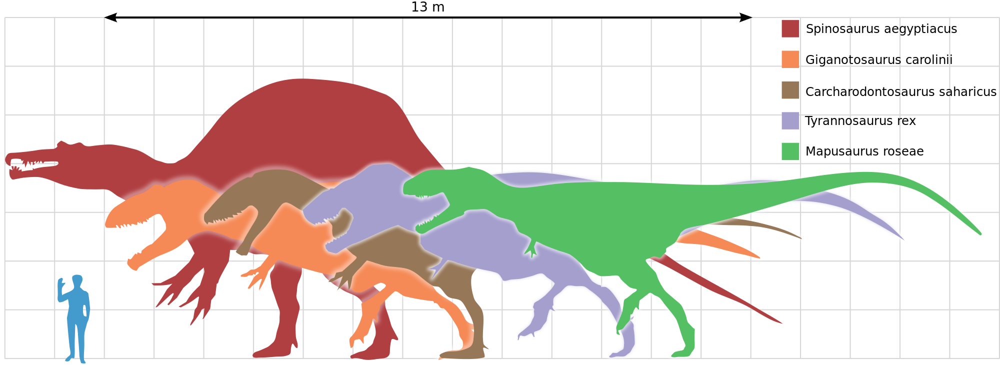
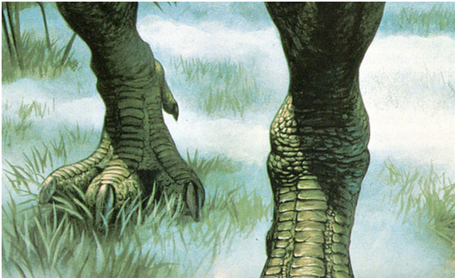

Theropoda means ‘Beast feet’. It was the group in which all carnivorous dinosaurs like Tyrannosaurus, Spinosaurus, Velociraptor, etc. belonged to. This diagram shows a few large theropods.

Theropod dinosaurs, or Theropods, all shared common features like sharp claws and teeth and all were bipedal. They all had four toed feet; three were big and were the toes which the Theropod stood on and the fourth was very small and hung in the air close to the ankle.

Theropods also needed a lot of intelligence and big brains. This is because finding, chasing, and killing an animal took more intelligence than finding and eating a plant, which is all that herbivorous dinosaurs did. However, theropods weren’t REALLY very smart. Even the smartest dinosaur which was a Theropod, Troodon, was only as smart as the dumbest animals today, like opossums.
Theropods were also typically faster than other dinosaurs, to hunt and kill. They had strong, slender legs giving them big strides. Their feet had 4 toes; 3 were clawed and touched the ground, supporting the dinosaur’s weight and 1 was tiny and attached near the ankle.
However, the facts stated in the above two paragraphs may not be true for all Theropods, because not all Theropods were carnivorous in fact. There was a family of dinosaurs, Therizinosauridae, that was purely herbivorous, and a few other dinosaurs.

The largest Theropod, which is also the largest terrestrial predator that ever existed, is Spinosaurus. The smallest Theropod, which is also the smallest adult dinosaur discovered, is Compsognathus.
Copyright Theropod Encyclopedia, 2019 (Images from Internet)